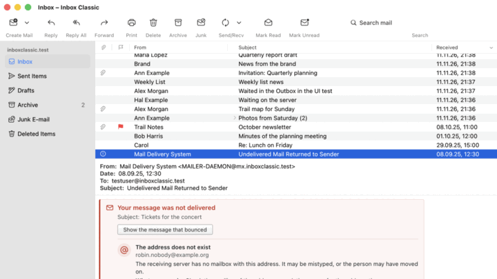

배달되지 않은 메시지
Inbox Classic이 배달 실패나 지연 알림을 인식하면 보고된 이유와 해결 방법을 알려 줍니다.
배달 알림에는 메시지 목록에 배달되지 않음 표시가 붙습니다. 알림을 열면 메시지 위의 카드에 메시지가 배달되지 않았는지, 아니면 지연되고 있을 뿐인지가 표시됩니다.

카드에는 받는 사람마다 이해하기 쉬운 이유와 해결 방법이 나열됩니다. 세부 정보 링크를 클릭하면 받는 서버가 보낸 원래 문구가 표시됩니다.
- 반송된 메시지 표시 링크는 원래 메시지를 계정에서 찾을 수 있으면 그 메시지를 선택합니다.
- 지연된 경우 지연된 메시지 표시 링크는 원래 메시지가 있으면 그 메시지를 선택합니다. 알림은 배달을 아직 시도하고 있다는 뜻이므로 배달 결과를 확인하기 전에는 다시 보내지 마십시오.
최종 실패의 흔한 이유와 해결 방법은 다음과 같습니다. 배달이 지연되고 있을 뿐이면 배달 결과를 확인하기 전에는 다시 보내지 마십시오.
| 카드에 표시되는 내용 | 해결 방법 |
|---|---|
| 주소가 존재하지 않습니다 | 주소의 철자를 확인하거나 상대방에게 현재 사용하는 주소를 물어봅니다. |
| 사서함이 가득 찼습니다 | 다른 방법으로 상대방에게 연락하여 공간을 확보해 달라고 요청한 후 다시 보냅니다. |
| 스팸으로 거부됨 | 서버의 설명을 확인합니다. 서버가 내용 때문에 거부했으면 메시지를 고친 후 다시 보냅니다. |
| 메일 서버가 차단 목록에 있습니다 | 알림을 메일 공급자에게 전달합니다. 보내는 서버의 주소가 차단된 것으로 보고되었습니다. |
| 잠시 보류됨 | 받는 서버가 나중에 다시 시도하도록 요청했습니다. 지연 알림만으로는 언제 배달될지 알 수 없습니다. |
모든 배달 알림을 찾으려면 is:bounce를 검색합니다. 알림은 이 컴퓨터에서 분석되며 그 내용이 별도의 분석 서비스로 전송되지 않습니다.